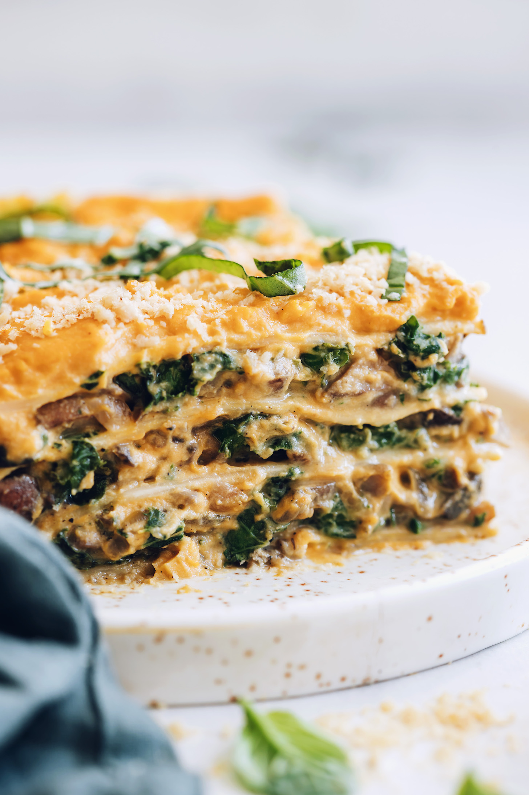

Lasagna

Butternut Squash Lasagna
Minimalist Baker's creamy butternut squash lasagna with kale and mushrooms.
Ingredients
Butternut Squash Sauce
- 2 cups butternut squash
- 10-12 garlic cloves
- 1.25 cups cashews
- 3 Tbsp lemon juice
- .5 tsp sea salt
- 1.5 cups water
Noodles
- 10 oz dry lasagna noodles
- 1 Tbsp salt
- .5 tsp olive oil
Filling
- 1.5 Tbsp olive oil
- 1 large onion, diced
- 6 cups finely chopped kale
- .5 tsp dried thyme (optional)
Instructions
- Preheat oven to 425 F and line a baking sheet with parchment paper. Place garlic cloves on the prepared baking sheet and top with squash. Bake for 30-40 minutes.
- While the squash is cooking, bring a large pot of salted water to a boil. Cook the lasagna noodles according to package instructions. Then drain, set aside, and gently toss with a little olive oil.
- Heat a large rimmed skillet over medium heat. Once hot, add the olive oil and onion and saute for 3-4 minutes or until softened, then add the mushrooms and saute another 5-7 minutes or until lightly browned. Then add kale, salt, pepper, and thyme and saute for another 5-7 minutes or until tender.
- Once the squash is tender and cool enough to handle, scoop 2 cups into a blender. Add roasted garlic cloves, cashews, lemon juice, salt, nutritional yeast, and water and blend until smooth, adding more water and scraping down the sides of the blender as needed. It should be thick, creamy, and scoopable. Taste and adjust as needed.
- Reduce oven temperature to 350 F.
- Assemble the lasagna in a 9 x 13 glass baking dish. Add .5 cup sauce to the bottom of the pan and spread evenly. Then add a layer of noodles followed by 1/3 of the filling. Repeat with two more layers of sauce, noodles, and filling. Then finish with a layer of noodles and the remaining sauce as the top layer.
- Bake lasagna at 350 F for 30 minutes or until the top layer is slightly dry and a little darker in color.
- Carefully remove from the oven and let cool 5-10 minutes before serving.